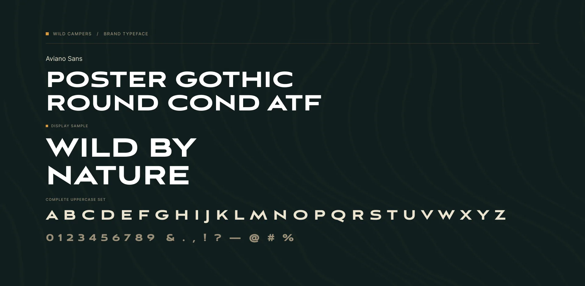
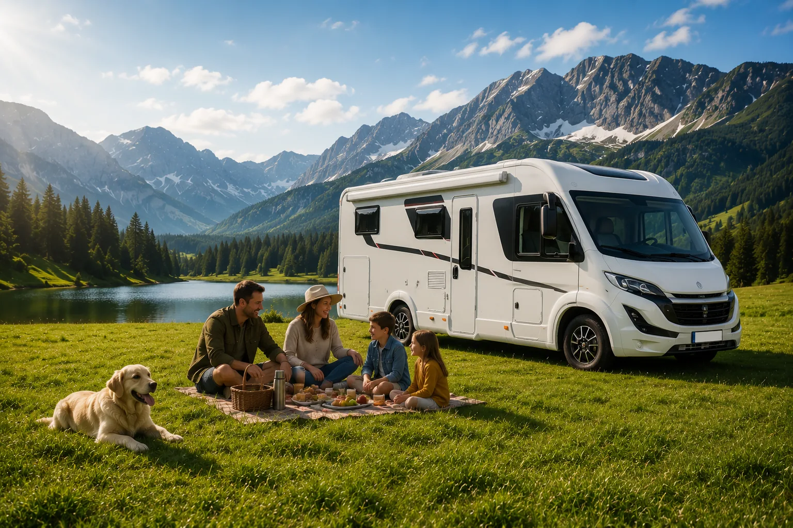
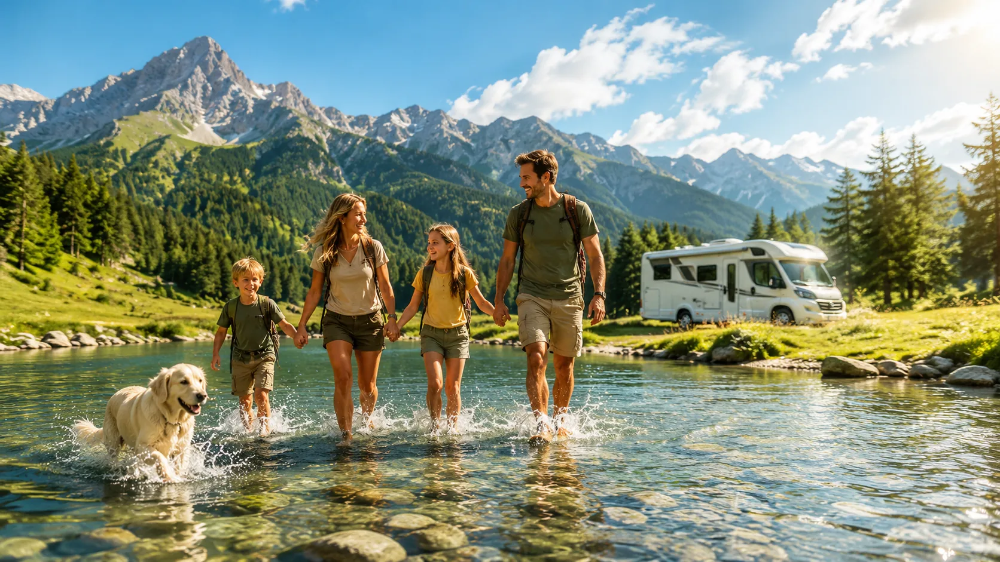
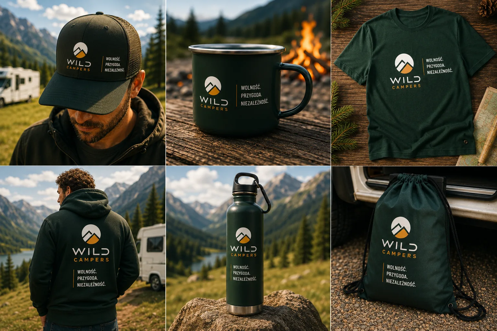
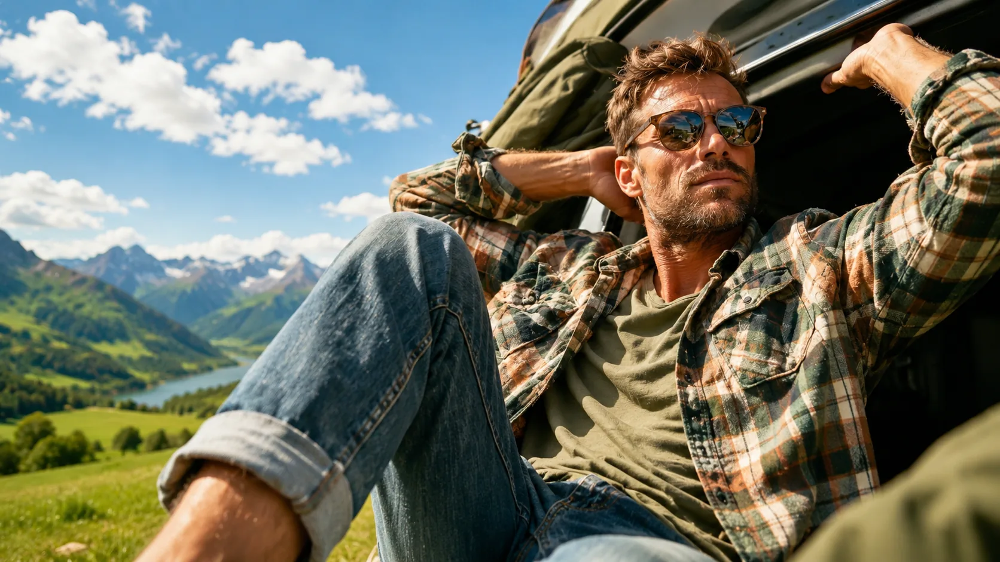

Przewiń






WILD CAMPERS / Color palette
Text on dark · surfaces
Primary ink · backgrounds
Accent · CTA · highlights
Deep green · panels
Color palette
Four core brand colors — high-contrast and trail-ready
01
Paper#FFFFFF
02
Carbon#020708
03
Amber#D28923
04
Pine#213627



